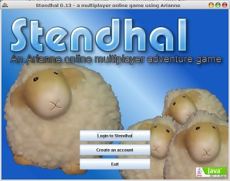
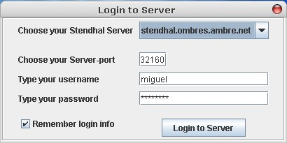
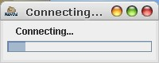

To launch Stendhal use Java webstart or by running the stendhal-0.XX.jar file that is in the stendhal download package.

Click on the Login to Stendhal button and enter your account information.
Be sure to choose the server where you created your account (the name
will be the same as the site you went to to create the account in the
first place. The default option is probably correct) and finally click
on Login to Server.

A progress bar will appear and soon you will be connected to the world.

If the server is down (not online) you will get an error message explaining this. In this case either try again later or create a new account on another server.